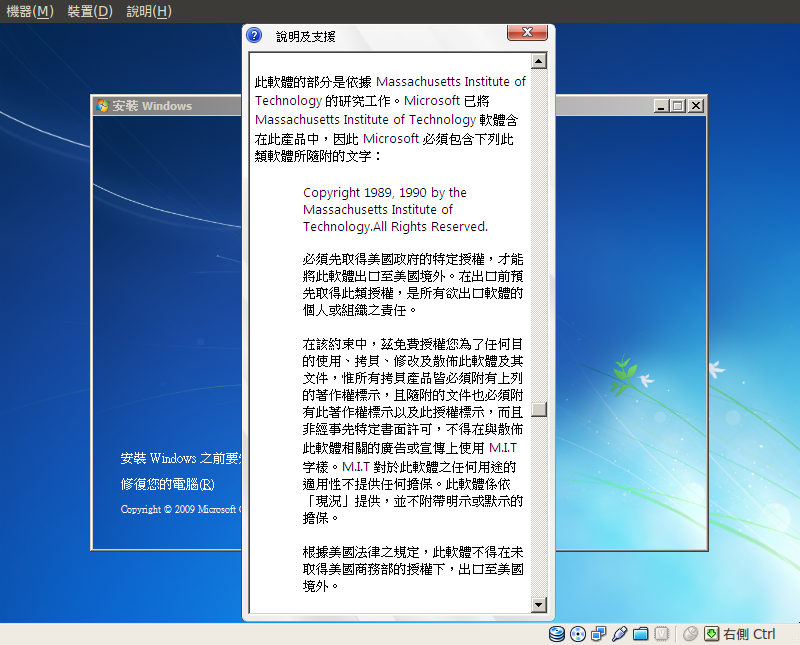

Hi arielblue,
歡迎來本論壇留言，你所提問的問題，大抵扣緊二個主軸，一是拿Open Source元件來修改之後，後續程式碼的傳遞怎麼標示的問題，第二個問題則是什麼時候要提供程式源碼，什麼時候不用提供程式源碼。
關於第一點，我先破個題，MIT、Apache-2.0這類的授權條款是允許轉授權/再授權(sublicense)的，也就是說，再散布程式時，你可以用自己的名義，把從前手得到的權利，轉給後手。比如說程式本來的授權聲明是這樣：2014 作者A released under MIT License，你可以更改為 2014 作者B(你自己) released under MIT License。然而，GPL、LGPL、AGPL，以及MPL、EPL這類copyleft性質的授權條款，是不允許轉授權/再授權(sublicense)的，也就是說，修改者只能將自己的名字與前手作者的名字堆疊在一起，以彼此的名義共同釋出後續的程式，比如說程式本來的授權聲明是這樣：2014 作者A released under GPL-2.0，你只能將其更改為 2014 作者A & 作者B(你自己) released under GPL-2.0。
而關於第二點，什麼時候要提供程式源碼，基本上只要是copyleft性質的程式碼，修改過的部份又是原始程式的衍生程式的話，這個部份依授權條款的規定，程式的散布方就是要提供程式源碼(Source Code)給程式的接受方的；而如果並不是copyleft性質的專案，例如MIT、BSD、Apache-2.0這樣比較寬鬆(permissive)的授權方式，程式的散布方是可以自行決定不要提供程式源碼，只要他在散布時聲明該元件過去是採MIT、BSD、Apache-2.0來提供，但經其調整之後改用Closed Source的其他授權方式，如Mirosoft Win7作業系統裡，就有不少這樣的宣告。
那麼，以下即截取你所提問的問題，大要式的回覆：
一、如果公司打算用販售服務的方式來賣這個產品的話，也就是除了這包source code之外，還提供環境架設（Apache, PHP, MySQL會另外下載安裝），後續諮詢或維護程式之類的服務，那麼根據上面那個討論串，我理解的是應該沒有商業授權上的問題（jQuery及plugin的版權聲明不動不改），只要在程式包內把CodeIgniter的原始版權聲明的license txt給付上即可，這樣對嗎？
是的、沒有「商業使用」上的問題。精準一點來說，你可以將上述的Source Code與LAMP(Linux + Apache + MySQL + PHP)這樣的運作框架作結合之後，進行商業販售。基本上，所有的自由開源軟體都是可以拿來做商業利用的，只是個別元件相關的授權義務性規則也要去遵守，並且如果部份程式碼是延續自由開源軟體授權的模式來散布的話，該部份的收費名目不能是軟體授權金(royalty)，而應該是客製化費用，或是方案提供的服務費用(total solution service fee)。
所以說，如果你提供給客戶的產品包括上述CodeIgniter的Framework、jQuery開發的2個plugin，以及LAMP的各個部份，相關元件如果延續是用自由開源軟體的授權方式，則這些開源元件都必須要提供下列的資料：
1、其授權條款全文
2、一個名為legal或notice的文字檔，統一說明各元件的授權狀態。
3、一個名為readme的文字檔，說明這些開源元件安裝時的必要資訊，以及嗣後從貴公司這端，得到程式目的碼之人，應該透過什麼程序或方式向貴公司索取相關開源元件的程式源碼。
補充說明，一般來說GNU相關的開源專案，內載授權條款全文的文件，會稱為COPYING，而說明各元件授權狀態的文件，會以LEGAL為檔名；而Apache Software Foundation、Mozilla Foundation相關專案，內載授權條款全文的文件，會稱為LICENSE，而說明各元件授權狀態的文件，會以NOTICE為檔名。此一檔名的標示方式雖然沒有在條款裡嚴格規定，不過是眾多專案標示上約定成俗的習慣。
二、如果公司只打算販售那包source code，環境安裝則由買方自行負責，那麼是否程式包內附上CI的license txt後就可以了呢？
自由開源軟體領域裡的原則是，散布者只要對自己所散布的開源程式元件，作義務性規定的負責。所以如果貴公司僅有販售/散布CodeIgniter的Framework、jQuery開發的2個plugin，而不涉及LAMP的各個部份，自然就只要就CodeIgniter的Framework、jQuery開發的2個plugin這部份，進行前述資料的提供：
1、其授權條款全文
2、一個名為legal或notice的文字檔，統一說明各元件的授權狀態。
3、一個名為readme的文字檔，說明這些開源元件安裝時的必要資訊，以及嗣後從貴公司這端，得到程式目的碼之人，應該透過什麼程序或方式向貴公司索取相關開源元件的程式源碼。
三、如果公司只打算販售那包source code，而未來使用上不在網路上公開，可能是在公司內部架設服務使用，或是精簡版只在工程師的筆電內安裝這樣，那麼同樣的是否程式包內附上CI的license txt後就可以了呢？
如果我的理解沒錯，此處講的是將CodeIgniter的Framework、jQuery開發的2個plugin，以及LAMP的各個部份，組合起來變成遠端式的應用程式服務(Application Service Provider)。而付費的客戶原則上是接觸不到相關的程式源碼，僅是透過貴公司搭建的網路平台來使用遠端的服務。如果是這種類型的話，貴公司並不需要提供前述開源元件的相關程式源碼給客戶，因為就像之前提到的「自由開源軟體領域裡的原則是，散布者只要對自己所散布的開源程式元件，作義務性規定的負責。」所以如果貴公司從頭至尾都沒有程式碼的散布與提供行為，那原則上是不會開啟自由開源軟體授權條款相關的義務性規定。但，亦有下列幾個例外：
1、GPL-3.0、LGPL-3.0之後的版本，規定就算不需要提供程式源碼，也必須在產品的相關標示上告知使用者，該產品內含GPL-3.0或LGPL-3.0授權的元件，此為明示的告知義務。
2、AGPL-3.0授權條款在第13款的地方明訂，若修改了AGPL-3.0授權的程式元件，且將其置於電腦網絡上進行服務上的應用，此時即使程式碼以遠端的利用方式並未散布，但亦必須提供程式源碼給該程式的使用者；另外一款OSL-3.0授權條款(Open Software License v. 3.0)亦是如此。
所以如果貴公司使用到的開源元件包括GPL-3.0、LGPL-3.0、AGPL-3.0或OSL-3.0，就必須特別注意額外的標示義務或程式源碼的提供義務，其他的開源元件，則沒有這樣進一步的要求。
四、另外是這包程式的授權問題，基於使用工具上的授權（如jQuery是MIT, CI是BSD等等），這包程式是否就會是BSD授權？如果我想要在程式內部也撰寫這包程式的授權，是否就是修改BSD的條款，只是把名稱改成程式的命名之類的？那麼CI的授權聲明是否也需附帶在程式包內，也就是程式包內同時有CI的授權聲明以及這份程式自己的授權聲明？
首先，當這包Source Code裡面又有BSD又有MIT授權的元件時，各元件彼此間的授權狀態其實並不會互相干擾，因為BSD、MIT授權的元件，其在授權特性上都沒有外擴性，所以有一種作法就是個自保留其原本的授權方式，然後以前述資料提供的方式作統一的標示來處理即可：
1、其授權條款全文
2、一個名為legal或notice的文字檔，統一說明各元件的授權狀態。
3、一個名為readme的文字檔，說明這些開源元件安裝時的必要資訊，以及嗣後從貴公司這端，得到程式目的碼之人，應該透過什麼程序或方式向貴公司索取相關開源元件的程式源碼。
而如果貴公司要更改這些BSD、MIT授權元件的聲明，例如改為自己的商業授權模式，來停止提供後手程式源碼的話，也是可以的，因為BSD、MIT授權條款是容許這樣的調整方式(GPL、MPL、EPL則不可)，實例可以參考附圖，Microsoft在Windows 7安裝過程中所作的標示範例。
五、最後一個問題是個人的疑問，雖說BSD是可以不提供原始碼，但是像這類web-based的服務，當我們是為使用者（比如說某個公司）撰寫主程式的時候，不是無可避免一定會把整份原始碼給使用者（公司）嗎？
嗯…是的，不過web-based的服務為使用者(某個公司)撰寫程式這樣的態樣，大致上是商業上的契約行為。可以說，依BSD、MIT授權條款，供給方可以改寫或調整BSD、MIT授權的元件，改以「不提供源碼的封閉授權條款」來提供，然而若需求方是商業上的夥伴，其在給付價金之後自然可能會將「提供源碼」作為契約要求的一環，此時提供義務就是寫在供給方與需求方個別擬定的契約條款裡了，而沒有和BSD、MIT授權條款本身有直接的關係。
其他與上述問題相關的文章有下列幾則，也表列在此供你作個參考：
修改自由軟體的著作權人標示：
www.openfoundry.org/tw/legal-column-list/1747-2010-07-15-10-26-14
自由軟體授權資訊的標示說明與 SPDX：
www.openfoundry.org/tw/legal-column-list/8420-license-info-of-floss-and-spdx
內含 GPL 授權元件產品的標示義務：
www.openfoundry.org/tw/legal-column-list/2384--gpl-
如何提供 GPL 元件的程式源碼：
www.openfoundry.org/tw/legal-column-list/8782-how-to-distribute-gpl-source-code
從開放源碼的理想到提供源碼的義務：
www.openfoundry.org/en/news/9120?task=view
散布 GPL 衍生程式所須提供的源碼範圍：
www.openfoundry.org/tw/legal-column-list/8119--gpl-
希望這些資訊對你有所幫助，後續有疑問的話，歡迎隨時接續討論。

20140625 17:10 LUCIEN C.H. LIN 